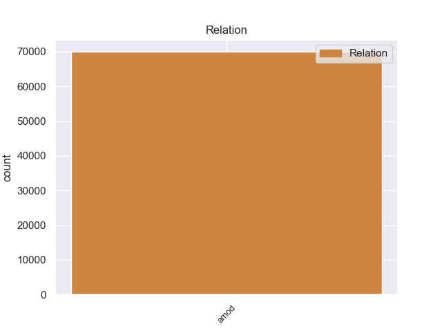
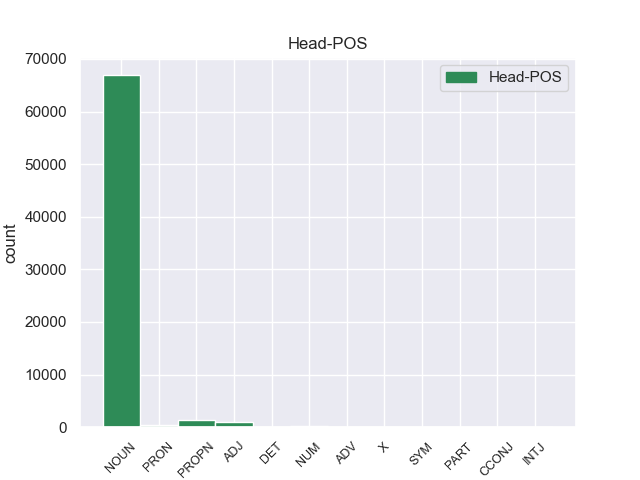
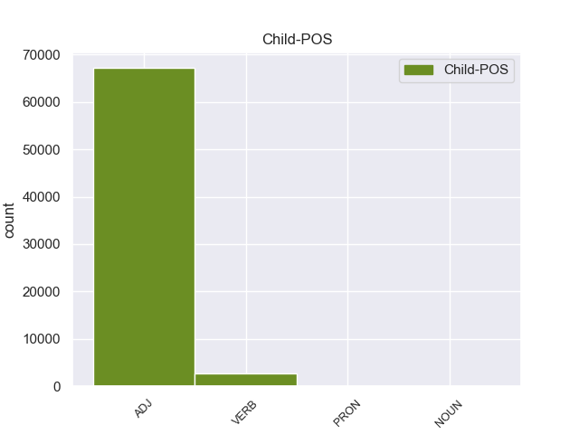

Distribution of features within this leaf



Morphosyntax Rules sorted by frequency.
- When the dependent token is the adjectival modifier(amod) of the head token, and the head token is NOUN and the dependent token is ADJ, the Case needs to be Gen.
1 Недаром _ _ _ _ 0 _ _ _
2 же _ _ _ _ 0 _ _ _
3 у _ _ _ _ 0 _ _ _
4 очкастого очкастый ADJ _ Case=Gen|Degree=Pos|Gender=Masc|Number=Sing 5 amod 5:amod _
5 мальчика мальчик NOUN _ Animacy=Anim|Case=Gen|Gender=Masc|Number=Sing 0 _ _ _
6 руки _ _ _ _ 0 _ _ _
7 были _ _ _ _ 0 _ _ _
8 в _ _ _ _ 0 _ _ _
9 кровяных _ _ _ _ 0 _ _ _
10 ссадинах _ _ _ _ 0 _ _ _
11 . _ _ _ _ 0 _ _ _
1 Не _ _ _ _ 0 _ _ _
2 прекращающаяся _ _ _ _ 0 _ _ _
3 даже _ _ _ _ 0 _ _ _
4 в _ _ _ _ 0 _ _ _
5 дреме _ _ _ _ 0 _ _ _
6 работа _ _ _ _ 0 _ _ _
7 громадных _ _ _ _ 0 _ _ _
8 челюстей _ _ _ _ 0 _ _ _
9 не _ _ _ _ 0 _ _ _
10 рождала _ _ _ _ 0 _ _ _
11 и _ _ _ _ 0 _ _ _
12 малого _ _ _ _ 0 _ _ _
13 звука _ _ _ _ 0 _ _ _
14 , _ _ _ _ 0 _ _ _
15 но _ _ _ _ 0 _ _ _
16 я _ _ _ _ 0 _ _ _
17 видел _ _ _ _ 0 _ _ _
18 не _ _ _ _ 0 _ _ _
19 раз _ _ _ _ 0 _ _ _
20 такое _ _ _ _ 0 _ _ _
21 же _ _ _ _ 0 _ _ _
22 бесшумное _ _ _ _ 0 _ _ _
23 , _ _ _ _ 0 _ _ _
24 недвижное _ _ _ _ 0 _ _ _
25 стадо _ _ _ _ 0 _ _ _
26 на _ _ _ _ 0 _ _ _
27 густо _ _ _ _ 0 _ _ _
28 - _ _ _ _ 0 _ _ _
29 зеленом _ _ _ _ 0 _ _ _
30 , _ _ _ _ 0 _ _ _
31 влажном _ _ _ _ 0 _ _ _
32 берегу _ _ _ _ 0 _ _ _
33 Серебрянки _ _ _ _ 0 _ _ _
34 , _ _ _ _ 0 _ _ _
35 почти _ _ _ _ 0 _ _ _
36 незримо _ _ _ _ 0 _ _ _
37 существующей _ _ _ _ 0 _ _ _
38 в _ _ _ _ 0 _ _ _
39 зарослях _ _ _ _ 0 _ _ _
40 осоки _ _ _ _ 0 _ _ _
41 , _ _ _ _ 0 _ _ _
42 камыша _ _ _ _ 0 _ _ _
43 и _ _ _ _ 0 _ _ _
44 лозин _ _ _ _ 0 _ _ _
45 , _ _ _ _ 0 _ _ _
46 и _ _ _ _ 0 _ _ _
47 так _ _ _ _ 0 _ _ _
48 же _ _ _ _ 0 _ _ _
49 пугался _ _ _ _ 0 _ _ _
50 зачарованной зачаровать VERB _ Aspect=Perf|Case=Gen|Gender=Fem|Number=Sing|Tense=Past|VerbForm=Part|Voice=Pass 51 amod 51:amod _
51 тихости тихость NOUN _ Animacy=Inan|Case=Gen|Gender=Fem|Number=Sing 0 _ _ _
52 обычно _ _ _ _ 0 _ _ _
53 столь _ _ _ _ 0 _ _ _
54 щедро _ _ _ _ 0 _ _ _
55 озвученных _ _ _ _ 0 _ _ _
56 в _ _ _ _ 0 _ _ _
57 каждом _ _ _ _ 0 _ _ _
58 жизненном _ _ _ _ 0 _ _ _
59 процессе _ _ _ _ 0 _ _ _
60 животных _ _ _ _ 0 _ _ _
61 . _ _ _ _ 0 _ _ _
1 Волховский _ _ _ _ 0 _ _ _
2 фронт _ _ _ _ 0 _ _ _
3 , _ _ _ _ 0 _ _ _
4 хотя _ _ _ _ 0 _ _ _
5 и _ _ _ _ 0 _ _ _
6 связанный _ _ _ _ 0 _ _ _
7 напрямую _ _ _ _ 0 _ _ _
8 с _ _ _ _ 0 _ _ _
9 Москвой _ _ _ _ 0 _ _ _
10 тремя _ _ _ _ 0 _ _ _
11 железными _ _ _ _ 0 _ _ _
12 дорогами _ _ _ _ 0 _ _ _
13 - _ _ _ _ 0 _ _ _
14 через _ _ _ _ 0 _ _ _
15 Вишеру _ _ _ _ 0 _ _ _
16 , _ _ _ _ 0 _ _ _
17 Неболчи _ _ _ _ 0 _ _ _
18 и _ _ _ _ 0 _ _ _
19 Тихвин _ _ _ _ 0 _ _ _
20 , _ _ _ _ 0 _ _ _
21 - _ _ _ _ 0 _ _ _
22 снабжался _ _ _ _ 0 _ _ _
23 плохо _ _ _ _ 0 _ _ _
24 , _ _ _ _ 0 _ _ _
25 словно _ _ _ _ 0 _ _ _
26 ему _ _ _ _ 0 _ _ _
27 полагалось _ _ _ _ 0 _ _ _
28 хоть _ _ _ _ 0 _ _ _
29 в _ _ _ _ 0 _ _ _
30 малой _ _ _ _ 0 _ _ _
31 мере _ _ _ _ 0 _ _ _
32 делить _ _ _ _ 0 _ _ _
33 судьбу _ _ _ _ 0 _ _ _
34 блокадного блокадный ADJ _ Case=Gen|Degree=Pos|Gender=Masc|Number=Sing 35 amod 35:amod _
35 Ленинграда Ленинград PROPN _ Animacy=Inan|Case=Gen|Gender=Masc|Number=Sing 0 _ _ _
36 , _ _ _ _ 0 _ _ _
37 который _ _ _ _ 0 _ _ _
38 он _ _ _ _ 0 _ _ _
39 никак _ _ _ _ 0 _ _ _
40 не _ _ _ _ 0 _ _ _
41 мог _ _ _ _ 0 _ _ _
42 освободить _ _ _ _ 0 _ _ _
43 . _ _ _ _ 0 _ _ _
1 В _ _ _ _ 0 _ _ _
2 моей _ _ _ _ 0 _ _ _
3 жизни _ _ _ _ 0 _ _ _
4 это _ _ _ _ 0 _ _ _
5 было _ _ _ _ 0 _ _ _
6 одним _ _ _ _ 0 _ _ _
7 из _ _ _ _ 0 _ _ _
8 самых самый ADJ _ Case=Gen|Degree=Pos|Number=Plur 9 amod 9:amod _
9 важных важный ADJ _ Case=Gen|Degree=Pos|Number=Plur 0 _ _ _
10 событий _ _ _ _ 0 _ _ _
11 , _ _ _ _ 0 _ _ _
12 куда _ _ _ _ 0 _ _ _
13 важнее _ _ _ _ 0 _ _ _
14 первой _ _ _ _ 0 _ _ _
15 близости _ _ _ _ 0 _ _ _
16 с _ _ _ _ 0 _ _ _
17 женщиной _ _ _ _ 0 _ _ _
18 , _ _ _ _ 0 _ _ _
19 первого _ _ _ _ 0 _ _ _
20 выстрела _ _ _ _ 0 _ _ _
21 , _ _ _ _ 0 _ _ _
22 направленного _ _ _ _ 0 _ _ _
23 в _ _ _ _ 0 _ _ _
24 меня _ _ _ _ 0 _ _ _
25 , _ _ _ _ 0 _ _ _
26 важнее _ _ _ _ 0 _ _ _
27 всех _ _ _ _ 0 _ _ _
28 книжных _ _ _ _ 0 _ _ _
29 открытий _ _ _ _ 0 _ _ _
30 . _ _ _ _ 0 _ _ _
1 Все _ _ _ _ 0 _ _ _
2 началось _ _ _ _ 0 _ _ _
3 , _ _ _ _ 0 _ _ _
4 как _ _ _ _ 0 _ _ _
5 и _ _ _ _ 0 _ _ _
6 обычно _ _ _ _ 0 _ _ _
7 начинаются _ _ _ _ 0 _ _ _
8 человеческие _ _ _ _ 0 _ _ _
9 невзгоды _ _ _ _ 0 _ _ _
10 , _ _ _ _ 0 _ _ _
11 с _ _ _ _ 0 _ _ _
12 чего-то что-то PRON _ Case=Gen 0 _ _ _
13 совсем _ _ _ _ 0 _ _ _
14 незначительного незначительный ADJ _ Case=Gen|Degree=Pos|Gender=Neut|Number=Sing 12 amod 12:amod SpaceAfter=No
15 , _ _ _ _ 0 _ _ _
16 что _ _ _ _ 0 _ _ _
17 пропускаешь _ _ _ _ 0 _ _ _
18 мимо _ _ _ _ 0 _ _ _
19 себя _ _ _ _ 0 _ _ _
20 , _ _ _ _ 0 _ _ _
21 а _ _ _ _ 0 _ _ _
22 потом _ _ _ _ 0 _ _ _
23 с _ _ _ _ 0 _ _ _
24 досадой _ _ _ _ 0 _ _ _
25 , _ _ _ _ 0 _ _ _
26 сожалением _ _ _ _ 0 _ _ _
27 и _ _ _ _ 0 _ _ _
28 болью _ _ _ _ 0 _ _ _
29 думаешь _ _ _ _ 0 _ _ _
30 : _ _ _ _ 0 _ _ _
31 почему _ _ _ _ 0 _ _ _
32 был _ _ _ _ 0 _ _ _
33 я _ _ _ _ 0 _ _ _
34 так _ _ _ _ 0 _ _ _
35 беспечен _ _ _ _ 0 _ _ _
36 , _ _ _ _ 0 _ _ _
37 почему _ _ _ _ 0 _ _ _
38 не _ _ _ _ 0 _ _ _
39 разгадал _ _ _ _ 0 _ _ _
40 врага _ _ _ _ 0 _ _ _
41 в _ _ _ _ 0 _ _ _
42 его _ _ _ _ 0 _ _ _
43 первом _ _ _ _ 0 _ _ _
44 смутном _ _ _ _ 0 _ _ _
45 обличье _ _ _ _ 0 _ _ _
46 ? _ _ _ _ 0 _ _ _
1 Генеральный _ _ _ _ 0 _ _ _
2 секретарь _ _ _ _ 0 _ _ _
3 ООН _ _ _ _ 0 _ _ _
4 Кофи _ _ _ _ 0 _ _ _
5 Аннан _ _ _ _ 0 _ _ _
6 выразил _ _ _ _ 0 _ _ _
7 глубокое _ _ _ _ 0 _ _ _
8 удовлетворение _ _ _ _ 0 _ _ _
9 в _ _ _ _ 0 _ _ _
10 связи _ _ _ _ 0 _ _ _
11 с _ _ _ _ 0 _ _ _
12 тем _ _ _ _ 0 _ _ _
13 , _ _ _ _ 0 _ _ _
14 что _ _ _ _ 0 _ _ _
15 граждане _ _ _ _ 0 _ _ _
16 Швейцарии _ _ _ _ 0 _ _ _
17 проголосовали _ _ _ _ 0 _ _ _
18 за _ _ _ _ 0 _ _ _
19 вступление _ _ _ _ 0 _ _ _
20 их _ _ _ _ 0 _ _ _
21 страны _ _ _ _ 0 _ _ _
22 в _ _ _ _ 0 _ _ _
23 Организацию _ _ _ _ 0 _ _ _
24 Объединенных объединить VERB _ Aspect=Perf|Case=Gen|Number=Plur|Tense=Past|VerbForm=Part|Voice=Pass 25 amod 25:amod _
25 Наций Нация PROPN _ Animacy=Inan|Case=Gen|Gender=Fem|Number=Plur 0 _ _ _
26 . _ _ _ _ 0 _ _ _
1 В _ _ _ _ 0 _ _ _
2 течение _ _ _ _ 0 _ _ _
3 ближайших ближайший ADJ _ Case=Gen|Degree=Pos|Number=Plur 4 amod 4:amod _
4 двух два NUM _ Case=Gen 0 _ _ _
5 лет _ _ _ _ 0 _ _ _
6 расходы _ _ _ _ 0 _ _ _
7 российского _ _ _ _ 0 _ _ _
8 бюджета _ _ _ _ 0 _ _ _
9 на _ _ _ _ 0 _ _ _
10 образование _ _ _ _ 0 _ _ _
11 могут _ _ _ _ 0 _ _ _
12 сократиться _ _ _ _ 0 _ _ _
13 более _ _ _ _ 0 _ _ _
14 чем _ _ _ _ 0 _ _ _
15 на _ _ _ _ 0 _ _ _
16 4 _ _ _ _ 0 _ _ _
17 млрд _ _ _ _ 0 _ _ _
18 рублей _ _ _ _ 0 _ _ _
19 . _ _ _ _ 0 _ _ _
1 Кто _ _ _ _ 0 _ _ _
2 станет _ _ _ _ 0 _ _ _
3 вечным _ _ _ _ 0 _ _ _
4 хозяином _ _ _ _ 0 _ _ _
5 Алазанской _ _ _ _ 0 _ _ _
6 долины _ _ _ _ 0 _ _ _
7 или _ _ _ _ 0 _ _ _
8 южнорусского _ _ _ _ 0 _ _ _
9 уникального _ _ _ _ 0 _ _ _
10 чернозема _ _ _ _ 0 _ _ _
11 - _ _ _ _ 0 _ _ _
12 крестьяне _ _ _ _ 0 _ _ _
13 или _ _ _ _ 0 _ _ _
14 дельцы _ _ _ _ 0 _ _ _
15 теневой _ _ _ _ 0 _ _ _
16 экономики _ _ _ _ 0 _ _ _
17 вкупе _ _ _ _ 0 _ _ _
18 с _ _ _ _ 0 _ _ _
19 коррумпированными _ _ _ _ 0 _ _ _
20 лицами _ _ _ _ 0 _ _ _
21 из _ _ _ _ 0 _ _ _
22 той тот DET _ Case=Gen|Gender=Fem|Number=Sing 0 _ _ _
23 самой самый ADJ _ Case=Gen|Degree=Pos|Gender=Fem|Number=Sing 22 amod 22:amod _
24 административно-командной _ _ _ _ 0 _ _ _
25 системы _ _ _ _ 0 _ _ _
26 ? _ _ _ _ 0 _ _ _
1 Если _ _ _ _ 0 _ _ _
2 правительство _ _ _ _ 0 _ _ _
3 не _ _ _ _ 0 _ _ _
4 откажется _ _ _ _ 0 _ _ _
5 от _ _ _ _ 0 _ _ _
6 заявленной _ _ _ _ 0 _ _ _
7 бюджетной _ _ _ _ 0 _ _ _
8 политики _ _ _ _ 0 _ _ _
9 , _ _ _ _ 0 _ _ _
10 инфляцию _ _ _ _ 0 _ _ _
11 удастся _ _ _ _ 0 _ _ _
12 постепенно _ _ _ _ 0 _ _ _
13 снизить _ _ _ _ 0 _ _ _
14 до _ _ _ _ 0 _ _ _
15 4 _ _ _ _ 0 _ _ _
16 % % SYM _ _ 0 _ _ _
17 годовых годовой ADJ _ Case=Gen|Degree=Pos|Number=Plur 16 amod 16:amod SpaceAfter=No
18 . _ _ _ _ 0 _ _ _
1 Реальная _ _ _ _ 0 _ _ _
2 комфортность _ _ _ _ 0 _ _ _
3 и _ _ _ _ 0 _ _ _
4 безопасность _ _ _ _ 0 _ _ _
5 жизни _ _ _ _ 0 _ _ _
6 в _ _ _ _ 0 _ _ _
7 бывших _ _ _ _ 0 _ _ _
8 соцстранах _ _ _ _ 0 _ _ _
9 ниже _ _ _ _ 0 _ _ _
10 , _ _ _ _ 0 _ _ _
11 и _ _ _ _ 0 _ _ _
12 по _ _ _ _ 0 _ _ _
13 принятому _ _ _ _ 0 _ _ _
14 отношению _ _ _ _ 0 _ _ _
15 к _ _ _ _ 0 _ _ _
16 ценности _ _ _ _ 0 _ _ _
17 человеческой _ _ _ _ 0 _ _ _
18 жизни _ _ _ _ 0 _ _ _
19 эти _ _ _ _ 0 _ _ _
20 страны _ _ _ _ 0 _ _ _
21 отстают _ _ _ _ 0 _ _ _
22 от _ _ _ _ 0 _ _ _
23 других другой ADJ _ Case=Gen|Degree=Pos|Number=Plur 0 _ _ _
24 обследованных обследовать VERB _ Aspect=Perf|Case=Gen|Number=Plur|Tense=Past|VerbForm=Part|Voice=Pass 23 amod 23:amod SpaceAfter=No
25 . _ _ _ _ 0 _ _ _
1 Финская _ _ _ _ 0 _ _ _
2 компания _ _ _ _ 0 _ _ _
3 " _ _ _ _ 0 _ _ _
4 Технополис _ _ _ _ 0 _ _ _
5 " _ _ _ _ 0 _ _ _
6 , _ _ _ _ 0 _ _ _
7 например _ _ _ _ 0 _ _ _
8 , _ _ _ _ 0 _ _ _
9 котируется _ _ _ _ 0 _ _ _
10 на _ _ _ _ 0 _ _ _
11 бирже _ _ _ _ 0 _ _ _
12 и _ _ _ _ 0 _ _ _
13 является _ _ _ _ 0 _ _ _
14 одной _ _ _ _ 0 _ _ _
15 из _ _ _ _ 0 _ _ _
16 крупнейших крупный ADJ _ Case=Gen|Degree=Sup|Number=Plur 19 amod 19:amod _
17 в _ _ _ _ 0 _ _ _
18 мире _ _ _ _ 0 _ _ _
19 real real X _ Foreign=Yes 0 _ _ _
20 estate _ _ _ _ 0 _ _ _
21 компаний _ _ _ _ 0 _ _ _
22 . _ _ _ _ 0 _ _ _
1 " _ _ _ _ 0 _ _ _
2 Если _ _ _ _ 0 _ _ _
3 просто _ _ _ _ 0 _ _ _
4 расформируют _ _ _ _ 0 _ _ _
5 вузы _ _ _ _ 0 _ _ _
6 , _ _ _ _ 0 _ _ _
7 то _ _ _ _ 0 _ _ _
8 на _ _ _ _ 0 _ _ _
9 качестве _ _ _ _ 0 _ _ _
10 оставшихся _ _ _ _ 0 _ _ _
11 реформа _ _ _ _ 0 _ _ _
12 никак _ _ _ _ 0 _ _ _
13 не _ _ _ _ 0 _ _ _
14 отразится _ _ _ _ 0 _ _ _
15 , _ _ _ _ 0 _ _ _
16 если _ _ _ _ 0 _ _ _
17 средства _ _ _ _ 0 _ _ _
18 80 _ _ _ _ 0 _ _ _
19 сокращаемых _ _ _ _ 0 _ _ _
20 пойдут _ _ _ _ 0 _ _ _
21 на _ _ _ _ 0 _ _ _
22 20 20 NUM _ _ 0 _ _ _
23 остающихся оставаться VERB _ Aspect=Imp|Case=Gen|Number=Plur|Tense=Pres|VerbForm=Part|Voice=Mid 22 amod 22:amod SpaceAfter=No
24 , _ _ _ _ 0 _ _ _
25 тогда _ _ _ _ 0 _ _ _
26 шансы _ _ _ _ 0 _ _ _
27 на _ _ _ _ 0 _ _ _
28 то _ _ _ _ 0 _ _ _
29 , _ _ _ _ 0 _ _ _
30 что _ _ _ _ 0 _ _ _
31 тенденция _ _ _ _ 0 _ _ _
32 падения _ _ _ _ 0 _ _ _
33 качества _ _ _ _ 0 _ _ _
34 сменится _ _ _ _ 0 _ _ _
35 тенденцией _ _ _ _ 0 _ _ _
36 его _ _ _ _ 0 _ _ _
37 роста _ _ _ _ 0 _ _ _
38 , _ _ _ _ 0 _ _ _
39 серьезно _ _ _ _ 0 _ _ _
40 возрастут _ _ _ _ 0 _ _ _
41 " _ _ _ _ 0 _ _ _
42 , _ _ _ _ 0 _ _ _
43 - _ _ _ _ 0 _ _ _
44 считает _ _ _ _ 0 _ _ _
45 заместитель _ _ _ _ 0 _ _ _
46 научного _ _ _ _ 0 _ _ _
47 руководителя _ _ _ _ 0 _ _ _
48 государственного _ _ _ _ 0 _ _ _
49 университета _ _ _ _ 0 _ _ _
50 Высшей _ _ _ _ 0 _ _ _
51 школы _ _ _ _ 0 _ _ _
52 экономики _ _ _ _ 0 _ _ _
53 Лев _ _ _ _ 0 _ _ _
54 Любимов _ _ _ _ 0 _ _ _
55 . _ _ _ _ 0 _ _ _
1 После _ _ _ _ 0 _ _ _
2 всего все PRON _ Animacy=Inan|Case=Gen|Gender=Neut|Number=Sing 0 _ _ _
3 сказанного сказать VERB _ Aspect=Perf|Case=Gen|Gender=Neut|Number=Sing|Tense=Past|VerbForm=Part|Voice=Pass 2 amod 2:amod _
4 особенно _ _ _ _ 0 _ _ _
5 мрачной _ _ _ _ 0 _ _ _
6 рисуется _ _ _ _ 0 _ _ _
7 малоплодородное _ _ _ _ 0 _ _ _
8 поле _ _ _ _ 0 _ _ _
9 российского _ _ _ _ 0 _ _ _
10 онлайнового _ _ _ _ 0 _ _ _
11 бизнеса _ _ _ _ 0 _ _ _
12 . _ _ _ _ 0 _ _ _
1 Но _ _ _ _ 0 _ _ _
2 троекратного троекратный ADJ _ Case=Gen|Degree=Pos|Gender=Masc|Number=Sing 4 amod 4:amod _
3 " _ _ _ _ 0 _ _ _
4 увы увы ADV _ Degree=Pos 0 _ _ _
5 " _ _ _ _ 0 _ _ _
6 заслуживает _ _ _ _ 0 _ _ _
7 мрачное _ _ _ _ 0 _ _ _
8 и _ _ _ _ 0 _ _ _
9 уверенное _ _ _ _ 0 _ _ _
10 предчувствие _ _ _ _ 0 _ _ _
11 - _ _ _ _ 0 _ _ _
12 это _ _ _ _ 0 _ _ _
13 еще _ _ _ _ 0 _ _ _
14 цветочки _ _ _ _ 0 _ _ _
15 , _ _ _ _ 0 _ _ _
16 ягодки _ _ _ _ 0 _ _ _
17 впереди _ _ _ _ 0 _ _ _
18 . _ _ _ _ 0 _ _ _
1 Ничего ничего PART _ _ 0 _ _ _
2 , _ _ _ _ 0 _ _ _
3 казалось _ _ _ _ 0 _ _ _
4 бы _ _ _ _ 0 _ _ _
5 , _ _ _ _ 0 _ _ _
6 общего общий ADJ _ Case=Gen|Degree=Pos|Gender=Neut|Number=Sing 1 amod 1:amod SpaceAfter=No
7 , _ _ _ _ 0 _ _ _
8 и _ _ _ _ 0 _ _ _
9 , _ _ _ _ 0 _ _ _
10 повторю _ _ _ _ 0 _ _ _
11 , _ _ _ _ 0 _ _ _
12 все _ _ _ _ 0 _ _ _
13 по _ _ _ _ 0 _ _ _
14 отдельности _ _ _ _ 0 _ _ _
15 уже _ _ _ _ 0 _ _ _
16 не _ _ _ _ 0 _ _ _
17 раз _ _ _ _ 0 _ _ _
18 случалось _ _ _ _ 0 _ _ _
19 . _ _ _ _ 0 _ _ _
1 Есть _ _ _ _ 0 _ _ _
2 великое _ _ _ _ 0 _ _ _
3 множество _ _ _ _ 0 _ _ _
4 и _ _ _ _ 0 _ _ _
5 других другой ADJ _ Case=Gen|Degree=Pos|Number=Plur 7 amod 7:amod _
6 " _ _ _ _ 0 _ _ _
7 но но CCONJ _ _ 0 _ _ _
8 " _ _ _ _ 0 _ _ _
9 , _ _ _ _ 0 _ _ _
10 которые _ _ _ _ 0 _ _ _
11 необходимо _ _ _ _ 0 _ _ _
12 учитывать _ _ _ _ 0 _ _ _
13 при _ _ _ _ 0 _ _ _
14 исчислении _ _ _ _ 0 _ _ _
15 НДС _ _ _ _ 0 _ _ _
16 " _ _ _ _ 0 _ _ _
17 . _ _ _ _ 0 _ _ _
1 Он _ _ _ _ 0 _ _ _
2 заявил _ _ _ _ 0 _ _ _
3 , _ _ _ _ 0 _ _ _
4 что _ _ _ _ 0 _ _ _
5 около _ _ _ _ 0 _ _ _
6 80 _ _ _ _ 0 _ _ _
7 % % SYM _ _ 0 _ _ _
8 нападавших нападать VERB _ Aspect=Imp|Case=Gen|Number=Plur|Tense=Past|VerbForm=Part|Voice=Act 7 amod 7:amod _
9 были _ _ _ _ 0 _ _ _
10 молодые _ _ _ _ 0 _ _ _
11 люди _ _ _ _ 0 _ _ _
12 в _ _ _ _ 0 _ _ _
13 возрасте _ _ _ _ 0 _ _ _
14 до _ _ _ _ 0 _ _ _
15 25 _ _ _ _ 0 _ _ _
16 лет _ _ _ _ 0 _ _ _
17 . _ _ _ _ 0 _ _ _
1 Об _ _ _ _ 0 _ _ _
2 этом _ _ _ _ 0 _ _ _
3 заявил _ _ _ _ 0 _ _ _
4 министр _ _ _ _ 0 _ _ _
5 иностранных _ _ _ _ 0 _ _ _
6 дел _ _ _ _ 0 _ _ _
7 Израиля _ _ _ _ 0 _ _ _
8 Шимон _ _ _ _ 0 _ _ _
9 Перес _ _ _ _ 0 _ _ _
10 на _ _ _ _ 0 _ _ _
11 встрече _ _ _ _ 0 _ _ _
12 с _ _ _ _ 0 _ _ _
13 генеральным _ _ _ _ 0 _ _ _
14 секретарем _ _ _ _ 0 _ _ _
15 ООН _ _ _ _ 0 _ _ _
16 Кофи _ _ _ _ 0 _ _ _
17 Аннаном _ _ _ _ 0 _ _ _
18 21 21 NUM _ _ 0 _ _ _
19 октября октябрь NOUN _ Animacy=Inan|Case=Gen|Gender=Masc|Number=Sing 18 amod 18:amod SpaceAfter=No
20 . _ _ _ _ 0 _ _ _
1 Я _ _ _ _ 0 _ _ _
2 не _ _ _ _ 0 _ _ _
3 играл _ _ _ _ 0 _ _ _
4 с _ _ _ _ 0 _ _ _
5 собой _ _ _ _ 0 _ _ _
6 , _ _ _ _ 0 _ _ _
7 я _ _ _ _ 0 _ _ _
8 действительно _ _ _ _ 0 _ _ _
9 не _ _ _ _ 0 _ _ _
10 видел _ _ _ _ 0 _ _ _
11 ни _ _ _ _ 0 _ _ _
12 его он PRON _ Case=Gen|Gender=Masc|Number=Sing|Person=3 14 amod 14:amod _
13 малого _ _ _ _ 0 _ _ _
14 роста рост NOUN _ Animacy=Inan|Case=Gen|Gender=Masc|Number=Sing 0 _ _ _
15 , _ _ _ _ 0 _ _ _
16 ни _ _ _ _ 0 _ _ _
17 почти _ _ _ _ 0 _ _ _
18 женской _ _ _ _ 0 _ _ _
19 слабости _ _ _ _ 0 _ _ _
20 , _ _ _ _ 0 _ _ _
21 ни _ _ _ _ 0 _ _ _
22 робких _ _ _ _ 0 _ _ _
23 , _ _ _ _ 0 _ _ _
24 неумелых _ _ _ _ 0 _ _ _
25 рук _ _ _ _ 0 _ _ _
26 . _ _ _ _ 0 _ _ _
non-conforming Examples:
1 Начальник _ _ _ _ 0 _ _ _
2 областного _ _ _ _ 0 _ _ _
3 управления _ _ _ _ 0 _ _ _
4 связи _ _ _ _ 0 _ _ _
5 Семен _ _ _ _ 0 _ _ _
6 Еремеевич _ _ _ _ 0 _ _ _
7 был _ _ _ _ 0 _ _ _
8 человек человек NOUN _ Animacy=Anim|Case=Nom|Gender=Masc|Number=Sing 0 _ _ _
9 простой простой ADJ _ Case=Nom|Degree=Pos|Gender=Masc|Number=Sing 8 amod 8:amod SpaceAfter=No
10 , _ _ _ _ 0 _ _ _
11 приходил _ _ _ _ 0 _ _ _
12 на _ _ _ _ 0 _ _ _
13 работу _ _ _ _ 0 _ _ _
14 всегда _ _ _ _ 0 _ _ _
15 вовремя _ _ _ _ 0 _ _ _
16 , _ _ _ _ 0 _ _ _
17 здоровался _ _ _ _ 0 _ _ _
18 с _ _ _ _ 0 _ _ _
19 секретаршей _ _ _ _ 0 _ _ _
20 за _ _ _ _ 0 _ _ _
21 руку _ _ _ _ 0 _ _ _
22 и _ _ _ _ 0 _ _ _
23 иногда _ _ _ _ 0 _ _ _
24 даже _ _ _ _ 0 _ _ _
25 писал _ _ _ _ 0 _ _ _
26 в _ _ _ _ 0 _ _ _
27 стенгазету _ _ _ _ 0 _ _ _
28 заметки _ _ _ _ 0 _ _ _
29 под _ _ _ _ 0 _ _ _
30 псевдонимом _ _ _ _ 0 _ _ _
31 " _ _ _ _ 0 _ _ _
32 Муха _ _ _ _ 0 _ _ _
33 " _ _ _ _ 0 _ _ _
34 . _ _ _ _ 0 _ _ _
1 В _ _ _ _ 0 _ _ _
2 приемной _ _ _ _ 0 _ _ _
3 его _ _ _ _ 0 _ _ _
4 с _ _ _ _ 0 _ _ _
5 утра _ _ _ _ 0 _ _ _
6 ожидали _ _ _ _ 0 _ _ _
7 посетители _ _ _ _ 0 _ _ _
8 , _ _ _ _ 0 _ _ _
9 - _ _ _ _ 0 _ _ _
10 кое-кто _ _ _ _ 0 _ _ _
11 с _ _ _ _ 0 _ _ _
12 важными важный ADJ _ Case=Ins|Degree=Pos|Number=Plur 13 amod 13:amod _
13 делами дело NOUN _ Animacy=Inan|Case=Ins|Gender=Neut|Number=Plur 0 _ _ _
14 , _ _ _ _ 0 _ _ _
15 а _ _ _ _ 0 _ _ _
16 кое-кто _ _ _ _ 0 _ _ _
17 и _ _ _ _ 0 _ _ _
18 с _ _ _ _ 0 _ _ _
19 такими _ _ _ _ 0 _ _ _
20 , _ _ _ _ 0 _ _ _
21 которые _ _ _ _ 0 _ _ _
22 легко _ _ _ _ 0 _ _ _
23 можно _ _ _ _ 0 _ _ _
24 было _ _ _ _ 0 _ _ _
25 решить _ _ _ _ 0 _ _ _
26 в _ _ _ _ 0 _ _ _
27 нижестоящих _ _ _ _ 0 _ _ _
28 инстанциях _ _ _ _ 0 _ _ _
29 , _ _ _ _ 0 _ _ _
30 не _ _ _ _ 0 _ _ _
31 затрудняя _ _ _ _ 0 _ _ _
32 Семена _ _ _ _ 0 _ _ _
33 Еремеевича _ _ _ _ 0 _ _ _
34 . _ _ _ _ 0 _ _ _
1 В _ _ _ _ 0 _ _ _
2 приемной _ _ _ _ 0 _ _ _
3 его _ _ _ _ 0 _ _ _
4 с _ _ _ _ 0 _ _ _
5 утра _ _ _ _ 0 _ _ _
6 ожидали _ _ _ _ 0 _ _ _
7 посетители _ _ _ _ 0 _ _ _
8 , _ _ _ _ 0 _ _ _
9 - _ _ _ _ 0 _ _ _
10 кое-кто _ _ _ _ 0 _ _ _
11 с _ _ _ _ 0 _ _ _
12 важными _ _ _ _ 0 _ _ _
13 делами _ _ _ _ 0 _ _ _
14 , _ _ _ _ 0 _ _ _
15 а _ _ _ _ 0 _ _ _
16 кое-кто _ _ _ _ 0 _ _ _
17 и _ _ _ _ 0 _ _ _
18 с _ _ _ _ 0 _ _ _
19 такими _ _ _ _ 0 _ _ _
20 , _ _ _ _ 0 _ _ _
21 которые _ _ _ _ 0 _ _ _
22 легко _ _ _ _ 0 _ _ _
23 можно _ _ _ _ 0 _ _ _
24 было _ _ _ _ 0 _ _ _
25 решить _ _ _ _ 0 _ _ _
26 в _ _ _ _ 0 _ _ _
27 нижестоящих нижестоящий ADJ _ Case=Loc|Degree=Pos|Number=Plur 28 amod 28:amod _
28 инстанциях инстанция NOUN _ Animacy=Inan|Case=Loc|Gender=Fem|Number=Plur 0 _ _ _
29 , _ _ _ _ 0 _ _ _
30 не _ _ _ _ 0 _ _ _
31 затрудняя _ _ _ _ 0 _ _ _
32 Семена _ _ _ _ 0 _ _ _
33 Еремеевича _ _ _ _ 0 _ _ _
34 . _ _ _ _ 0 _ _ _
1 У _ _ _ _ 0 _ _ _
2 двери _ _ _ _ 0 _ _ _
3 стоял _ _ _ _ 0 _ _ _
4 стол _ _ _ _ 0 _ _ _
5 секретарши _ _ _ _ 0 _ _ _
6 , _ _ _ _ 0 _ _ _
7 на _ _ _ _ 0 _ _ _
8 столе _ _ _ _ 0 _ _ _
9 - _ _ _ _ 0 _ _ _
10 пишущая писать VERB _ Aspect=Imp|Case=Nom|Gender=Fem|Number=Sing|Tense=Pres|VerbForm=Part|Voice=Act 11 amod 11:amod _
11 машинка машинка NOUN _ Animacy=Inan|Case=Nom|Gender=Fem|Number=Sing 0 _ _ _
12 с _ _ _ _ 0 _ _ _
13 широкой _ _ _ _ 0 _ _ _
14 кареткой _ _ _ _ 0 _ _ _
15 . _ _ _ _ 0 _ _ _
1 У _ _ _ _ 0 _ _ _
2 двери _ _ _ _ 0 _ _ _
3 стоял _ _ _ _ 0 _ _ _
4 стол _ _ _ _ 0 _ _ _
5 секретарши _ _ _ _ 0 _ _ _
6 , _ _ _ _ 0 _ _ _
7 на _ _ _ _ 0 _ _ _
8 столе _ _ _ _ 0 _ _ _
9 - _ _ _ _ 0 _ _ _
10 пишущая _ _ _ _ 0 _ _ _
11 машинка _ _ _ _ 0 _ _ _
12 с _ _ _ _ 0 _ _ _
13 широкой широкий ADJ _ Case=Ins|Degree=Pos|Gender=Fem|Number=Sing 14 amod 14:amod _
14 кареткой каретка NOUN _ Animacy=Inan|Case=Ins|Gender=Fem|Number=Sing 0 _ _ _
15 . _ _ _ _ 0 _ _ _